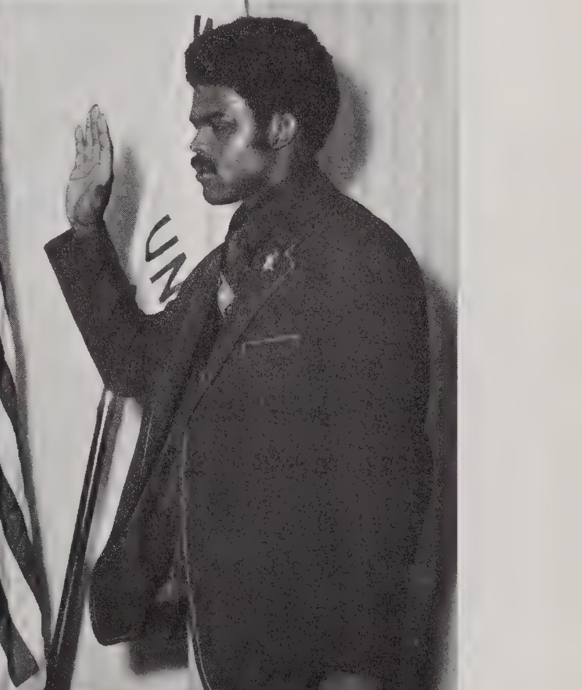
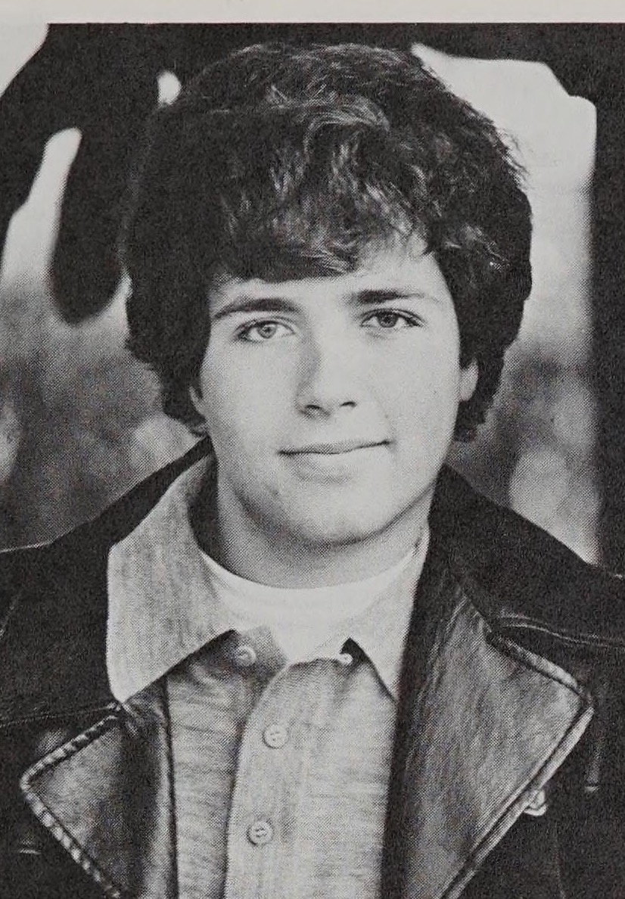

#
Regents extend visitation as the year opens
The Herald's opening issue reported the Board of Regents extending dormitory visitation and approving a $29.8 million budget at the board's first session of the year.
Associated Students · academic year


Student regent, not president. Sworn in 19 June 1974 as WKU's first African American student regent.
Gregory McKinney came to campus prominence as a speaker: in March 1974 the Herald reported him winning top honors in competition.
That spring McKinney ran for the student seat on the Board of Regents against Sid Stevens, the two candidates' final appeals running side by side in the Herald as an editorial called the race a clear choice for voters.
McKinney won the seat and was sworn in on June 19, 1974, becoming WKU's first African American student regent.
Midway through the fall 1974 semester, Herald writer Al Cross profiled the new regent under the headline 'Greg McKinney Feels Regents Can Aid Western's Progress,' as McKinney settled into his seat on the Board of Regents.
As the academic year closed, the Herald reported 'Student Regent Greg McKinney Calls Year Rewarding,' in the same issue that covered the regents approving a record budget and academic proposals.
After his term as student regent, McKinney stayed on at WKU as a graduate assistant in Student Affairs. The university's own file on him, opened in 1983, holds correspondence between McKinney and President Donald Zacharias and a paper he wrote titled "Student Affairs: An Analysis" - the record of a former student regent moving into the administration whose board he had once sat on.
Sources for this account
Everything the archive holds on Gregory McKinney, gathered on one page.
ASG president. The Herald of 1974 reports 'Jeff Consolo Tabs Eight for Congress' - a president making appointments to the Associated Student Congress.
Jeff Consolo won the Associated Student Government presidency in the March 1974 election on a ticket with Steve Henry, in a cycle whose primary the Herald said showed Greek influence.
Taking office, Consolo told the Herald he hoped for increased student involvement during his term.
Consolo's term closed on April 15, 1975, when new ASG officers were installed at the day's meeting after a spring in which his congress had simplified election procedures and wound down its concert program.
Jeffrey Paul Consolo, of Mansfield, Ohio, served as the ninth president of WKU's Associated Student Government for the 1974-75 term, according to the SGA's own roster of former presidents.
Early in the fall 1974 semester, Consolo appointed eight students to seats in the ASG congress, reported by Jim Reynolds under the headline 'Jeff Consolo Tabs Eight for Congress.'
In early April 1975, as the polls prepared to open to elect his successor, the Herald ran 'Jeff Consolo Notes Progress in His Term' alongside items crediting ASG moves with cutting bookstore prices, gaining parking board input and folding the Volunteer Bureau into the organization.
Sources for this account
Everything the archive holds on Jeffrey Consolo, gathered on one page.
Everyone the record shows in office this year. Each name goes to their own page, with every office they held and everything the archive says they did.
Nation was administrative vice president of ASG in 1974-75. President Jeff Consolo, listing the officers he worked with, named Nation first and said they had all done a good job; the 1975 Talisman's Greek pages also record him as administrative vice-president. The archive had no administrative vice president recorded for this year.
1975 Talisman, Associated Student GovernmentJohnson was ASG treasurer in 1974-75. The caption shows him discussing the signing of War and the Charlie Daniels Band with activities vice president Tom LaCivita. A Rickie Johnson appears on the ASG Congress attendance roll printed in the 1976 Talisman, so he may have stayed in Congress the following year; the spelling differs between the two volumes and is not settled.
1975 Talisman, Associated Student GovernmentKirkpatrick was ASG secretary in 1974-75, shown checking meeting notes while Consolo conferred with Panhellenic Council president Donna Filburn. She also appears in the 1974 Talisman talking with LaCivita and Vice President for Academic Affairs Dr. John Minton.
1975 Talisman, Associated Student GovernmentLaCivita held the activities vice presidency for a second consecutive year in 1974-75; the archive records his 1973-74 term separately, where his profile is written. He ran unopposed for re-election. He chaired the ASG Activities Committee, worked to a $42,000 entertainment budget of which $27,000 went to two free concerts, and after protests over the poorly attended Doc Severinsen Homecoming concert absorbed the newly formed Student Action Committee into his committee, saying the added personnel would give him more people to back him up. Bookings were settled between him and Ron Beck, assistant dean of student affairs, with whom LaCivita had publicly clashed over concert booking the previous year.
1975 Talisman, Associated Student GovernmentMcDivitt was elected to the Associated Student Government Congress, the 1975 Talisman's Sigma Alpha Epsilon chapter pages record, alongside fraternity brother Steve Henry, who went on to be ASG president in 1975-76. This entry lists him as ASG's student affairs chairperson for 1974-75; the archive has not found a source confirming when or how he came into that post. The Herald issue of 7 February 1975 previously cited for it (digitalcommons.wku.edu/dlsc_ua_records/5048) does not name him in its index, and the earlier account of an appointment at the Congress meeting of 4 February 1975 has been withdrawn as unsourced.
1975 Talisman, Sigma Alpha EpsilonLevy was an ASG Congress member in 1974-75 and again in 1975-76. In a letter to the College Heights Herald he wrote that he had hoped the year's meetings would differ from the previous year's invisible congress, and reported a good number absent from the 1 October 1974 meeting, at which three of four committee reports were given by the president himself. In 1975-76 he brought charges against ASG treasurer David Payne over spending before budget approval, appeared twice before the Judicial Council, and lost, the council ruling in Payne's favour.
1975 Talisman, Associated Student GovernmentConsolo appointed Pulman representative-at-large in February 1975, filling one of the two places left vacant by Christy Vogt's resignation from Congress.
Herald 50:35, 7 Feb 1975, 'ASG congress hears treasurer's budget explanation'The 1975 Talisman records Davenport as representative-at-large on the ASG congress. In February 1975 she was one of two students appointed to the University Complaint Committee, alongside Suzanne Held and Ray Biggerstaff, an assistant professor in the health and safety department.
1975 Talisman, Alpha Delta Pi; Herald 50:35, 7 Feb 1975Vogt sat in the ASG Congress in 1974-75 and resigned from it on 28 January 1975. The Herald reported that both the student affairs chairpersonship and a representative-at-large seat were vacated by her resignation and were filled the following week by presidential appointment. She returned the next year as administrative vice president, and the archive already records that term.
Herald 50:35, 7 Feb 1975, 'ASG congress hears treasurer's budget explanation'The 16 things student government staged or ran for the campus this year, drawn from the chronology below. Every one of them also appears on the programmes page, which runs the whole sixty years together.
The Herald's opening issue reported the Board of Regents extending dormitory visitation and approving a $29.8 million budget at the board's first session of the year.
ASG sponsored a Bluegrass Festival on 28 August 1974, headlined by Lester Flatt and the Clinch Mountain Clan, who described their music as folk music with overdrive. Scheduled as an outdoor festival in the amphitheatre, it had to be moved into Van Meter Auditorium because of rain.
The Herald reported on 30 August 1974 that Associated Student Government had booked its entertainment programme for the fall semester. The 1975 Talisman set out the season that followed: an ASG bluegrass festival on 28 August, moved indoors to Van Meter Auditorium by rain and headlined by Lester Flatt and the Clinch Mountain Clan; Doc Severinsen at Homecoming on 11 October, picketed by about 30 students; and America free on 7 November. ASG had booked Al Stewart for a 3 November mini-concert, but his United States tour was cancelled over immigration law and activities vice-president Tom LaCivita booked Kiss in his place.
ASG operated on a budget of $42,000 for all forms of entertainment in 1974-75. It set aside $27,000 for two free concerts and $15,000 for mini-concerts, dances and other acts, with major concerts financed by their own gate receipts.
$42,000 entertainment budget; $27,000 for two free concerts, $15,000 for mini-concerts and dances
The Nashville group Barefoot Jerry entertained a small crowd in Van Meter with a set that ranged across rock, country, blues and jazz and ended in a standing ovation. Activities vice president Tom LaCivita said ASG lost almost $1,500 on it; the Talisman, which does not date the show, called it one of the finer shows of its size at Western.
lost almost $1,500
ASG changed the student discount card for what the Talisman described as a far better and cheaper one. The change was listed among the accomplishments of the Consolo administration alongside the new academic complaint system.
Scott Johnston reported in the Herald of 20 September 1974 that ASG was seeking more votes on the Academic Council. The 1975 Talisman quoted president Jeff Consolo saying ASG had drawn up a resolution for the Council's Rules Committee asking for three more student votes and voting status for its three executive officers, since students without a declared major were not represented through a college; the Council then had two representatives from each of seven colleges, half of them voting, for a total of 40 votes.
Herald 50:7, 20 Sep 1974; 1975 Talisman, Associated Student Government, p. 112
The Herald reported that Jay Keffer won the freshman election for the top freshman post. In the same issue, ASG president Jeff Consolo tabbed eight students for seats in the ASG congress, and the Academic Council heard a proposal for more student votes.
In a letter printed in the Herald of 4 October 1974, Congress member Marc Levy wrote that he had hoped the year's meetings would differ from the previous year's invisible congress. The 1975 Talisman quoted the letter, recording that a roll call at the meeting of 1 October 1974 showed a good number of people missing and that three of the four committee reports were delivered by president Jeff Consolo because of absences.
Doc Severinsen played the Homecoming concert on 11 October 1974 with Today's Children and the Now Generation Brass, before roughly 3,000 people, a substantial majority of them alumni. About thirty students picketed the doors; Severinsen complimented the audience for braving the picket lines and said he respected the demonstrators' right to exercise an American privilege.
attendance about 3,000
Protesters urged a revamping of the Associated Student Government. The same issue carried Janet Steen's report that ASG ecology projects were non-existent.
The Herald reported that the protest at the Severinsen concert had prompted a coalition seeking change in concert booking. The Student Action Committee that resulted argued that Ron Beck did not have the time the booking job needed and sought power for the activities vice president to negotiate with acts; Kentucky law prevented a student from controlling the funds, so the role stayed advisory, and the committee later folded into ASG's Student Activities Committee.
Jim Reynolds reported a bill seeking an ASG financial report. In February 1975 the Herald reported that ASG funds were dwindling and that Congress had heard the treasurer's explanation of the budget.
The Herald of 25 October 1974 billed the Bar-Kays for a mini-concert that night. The 1975 Talisman records that ASG presented the seven-member group, the backing band on Isaac Hayes's 'Hot Buttered Soul' and 'Shaft' albums, as one of its major mini-concerts of the year, and that ASG broke even on the concert.
broke even
ASG booked Al Stewart for a mini-concert on 3 November 1974, but his United States tour was cancelled over immigration law. Tom LaCivita booked Kiss in his place, in an effort to ease the pressure students had put on ASG over its choice of acts.
ASG presented America as the first free concert of the school year on 7 November 1974, with Chad Stewart of Chad and Jeremy opening. Cracked speakers and feedback marred the sound, but lighters brought the band back for 'A Horse with No Name'; the Talisman recorded that ASG went into steadily increasing debt by presenting America free.
ASG scheduled the rock band Kiss and initiated a concert hour, part of its role booking campus entertainment that fall. The concert program later became a major source of financial trouble for the organization.
Jim Reynolds reported in the Herald that ASG had established a service area. The reorganisation of that year had put ASG's work into two areas, student affairs and academic affairs, with projects assigned to one or the other.
Kiss played to a capacity crowd in Van Meter Auditorium on 7 December 1974, with smoke bombs, fire-eating, whiteface and leather bat wings, and Gene Simmons simulating vomiting and dripping stage blood over the front row. Ron Beck said afterwards that he would never again take part in booking this kind of act for Western because the show had no educational value for students.
The academic complaint system became University policy when the Board of Regents approved it in January 1975, four months after ASG passed a resolution asking that the complaint system be accelerated. A second ASG resolution, asking that incompletes not be counted in the computation of grade point averages, also reached the regents and was approved. The day of the January approval is not given in the source.
The Student Volunteer Bureau, which placed students in community volunteer work, weakened when founder Rodney Berry could not secure administrators or funds. Berry approached ASG president Jeff Consolo about folding it into ASG, and the Talisman recorded the merger passing at the last meeting of the fall semester by better than 80 per cent, with the tutorial programme consolidated into ASG at the same time. The Herald of 21 January 1975 reported that ASG had agreed to administer the bureau and had rescued it.
Herald 50:30, 21 Jan 1975 PDF1975 Talisman, Associated Student Government
Associated Student Government billed Pure Prairie League, and the group played two shows in Van Meter on 31 January 1975. Sound problems ruined most of the first act at 7:30, and the bassist, printed in the Talisman as Mike Rieley, asked the 9:30 audience whether anyone had seen the first show. He said it was the group's first experience with the sound crew the university had contracted. The problems were solved before the second show, which the 1975 Talisman rated far better.
1975 Talisman, Entertainment; announced in College Heights Herald 50:31, 24 Jan 1975
Betsy Leake reported that ASG would study its own effectiveness. Four days later the paper reported that a report showed ASG funds were dwindling, and on 7 February that financial difficulties might force the organisation to drop its entertainment duties.
The Herald reported that financial difficulties might force ASG to drop its entertainment duties, and the ASG congress heard the treasurer's budget explanation. Columnists Dave Allen and Craig Griffith examined the organization's budget problems in the same issue.
The Herald of 11 February 1975 reported, in a story by Neil Budde, that the residence hall hearing board system had ended. The archive does not hold the article's text, so what replaced the boards is not established.
ASG action was halted twice during the week by a lack of quorum. A Herald editorial said the confusion in ASG signaled a need for change.
ASG's first major spring concert put War and the Charlie Daniels Band in Diddle Arena on 3 March 1975. Students called the Charlie Daniels set the best they had had in years and matches and lighters brought him back for 'Orange Blossom Special', but attendance was very low.
The primary election for Associated Student Government was canceled, and the student government approved a constitutional change. A letter writer in the same issue criticized the Herald's coverage of ASG.
ASG passed a motion simplifying voting procedures for the spring election, and the ASG treasurer took to the Herald's letters column the same day.
The Herald reported in the same issue that an ASG move had cut bookstore prices, that a part-time athletic discount had been approved and that the Volunteer Bureau had been made part of ASG. ASG had proposed raising the part-time incidental fee so part-time students could enter athletic events on the same footing as full-time students.
Following the spring election, the Herald reported that incoming president Steve Henry would give activities priority in Associated Student Government. The organization also prepared to name its top member, and the paper noted that Greeks continued to dominate the campus political scene.
New Associated Student Government officers were installed at the day's meeting, as the outgoing congress abandoned plans for a final concert of the semester and the editorial page pronounced incoming president Steve Henry's entertainment plan inadequate.
Every source cited above, once, with the number of entries that rest on it.
Preferred citation
“1974-75,” SGA 60: Student Government at Western Kentucky University, 1966–2026, revised 18 August 2026, y/1974-75.html
Where a name on this page differs from the plaque in the SGA Chambers, the difference is explained above and recorded on the corrections page.